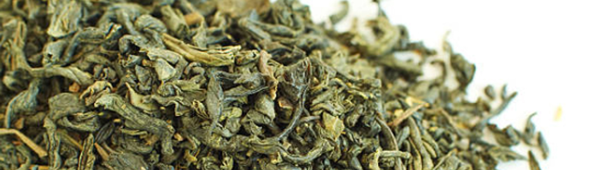

Bằng sự nỗ nực không ngừng, trải qua hơn 70 năm xây dựng và phát triển trong lĩnh vực trà Thái Nguyên từ khi còn sản xuất truyền thống với số lượng nhỏ lẻ từ những năm 1953, Trà Sen Bách Diệp đã thay đổi và xây dựng để trở thành một thương hiệu trà xanh
vững mạnh và càng đi sâu vào thị trường trà Việt nói riêng và thế giới đồ uống nói chung.
Với mục tiêu mang đến thị trường một sản phẩm trà mang thương hiệu Thái Nguyên “sạch” chính hiệu cũng như sự
trăn trở về sự phát triển của thị trường chè Việt Nam, cách đây 10 năm trên thị trường trà Việt, người con ưu tú đó đã thành lập một công ty chuyên sản xuất và phân phối về trà sạch mang thương hiệu Trà Sen Bách Diệp

Với phương châm “Uy tín chất lượng sản phẩm là mục tiêu số 1”, Trà Sen Bách Diệp đã luôn nỗ lực cả về nhân lực, vật lực, xây dựng uy tín thương hiệu, niềm tin với khách hàng thông qua những sản phẩm của công ty. Cùng với sự tín nhiệm của khách hàng vào
sản phẩm của Trà Sen Bách Diệp trong thời gian qua, Trà Sen Bách Diệp đã không những phát triển thành một công ty vững mạnh trong ngành trà thái nguyên ngon Việt Nam đạt được Cúp Vàng thương hiệu Doanh Nhân Tinh hoa Đất Việt và
Thương hiệu vàng Uy tín… Từ đó tạo nên động lực để Trà Sen Bách Diệp phấn đấu để trở thành một trong những tập đoàn sản xuất, chế biến và cung cấp trà hàng đầu Việt Nam và thế giới
Sản Phẩm của công
ty đạt đầy đủ tiêu chuẩn vệ sinh an toàn của Chi Cục Vệ Sinh An Toàn Thực Phẩm Của Thái Nguyên - Của chi cục Hà nội.Đạt tiêu chuẩn xuất khẩu Chicago - Hoa Kì. Trà Tân Cương một loại đồ uống nổi tiếng trong ẩm thực của người Việt
Nam có hương thơm cốm dịu dàng đặc trưng, màu nước xanh trong, sánh và bền, vị chát dịu, uống xong có hậu ngọt lắng sâu trong vị giác người thưởng thức. Sản phẩm trà tân cương thái nguyên của nhà máy có tác dụng giải nhiệt, giảm
béo, trị tăng huyết áp và phòng chống phóng xạ, chống ung thư... Với phương châm "Uy tín chất lượng sản phẩm là mục tiêu số 1", Trà Sen Bách DIệp không ngừng phấn đấu để trở thành một trong những tập đoàn sản xuất, chế biến và
cung cấp trà hàng đầu Việt Nam và thế giới.
